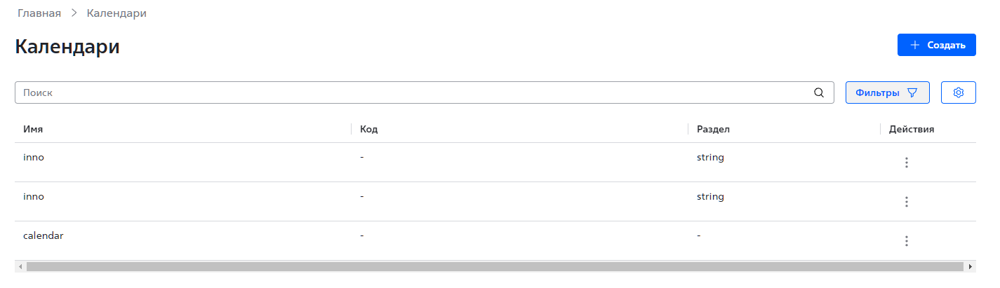
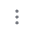

Рис. 1. Главная страница раздела Календари.
Приложение «АРМ для Системного календаря» предоставляет административный веб-интерфейс для выполнения следующих операций:
просмотр списка календарей;
просмотр календаря;
создание календаря;
удаление календаря;
изменение параметров календаря;
изменение параметров дат в календаре.
Операции в веб-интерфейсе приложения доступны пользователю с правами администратора.
Для разграничения прав доступа в приложении используется атрибутная модель (ABAC) и инструмент применения политик безопасности Open Policy Agent (OPA).
Веб-интерфейс приложения «АРМ для Системного календаря» доступен из веб-интерфейса приложения «АРМ сотрудника банка» (АРМ ДБО).
Для начала работы и получения доступа к функциональности пройдите аутентификацию в приложении АРМ ДБО, используя вашу учетную запись с полномочиями администратора.
| См. подробное описание процедуры аутентификации в документации на АРМ ДБО. |
После успешного прохождения процедуры аутентификации откроется главная страница АРМ ДБО.
Для перехода в интерфейс приложения «АРМ для Системного календаря»:
Нажмите на боковой панели Разное. Появится выпадающее меню.
Выберите Календари. Откроется главная страница раздела Календари (Рис. 1).
Основные сценарии использования приложения «АРМ для Системного календаря»:
Чтобы просмотреть список календарей, перейдите на главную страницу раздела Календари. Для каждого календаря в списке отображаются следующие параметры:
имя календаря;
код календаря;
раздел, указывающий на принадлежность календаря к одному или нескольким приложениям;
доступные операции над календарем.
Чтобы просмотреть выбранный календарь:
Перейдите на главную страницу раздела Календари.
Нажмите на значок  в столбце Действия и строке для выбранного календаря. Откроется выпадающее меню.
Выберите Открыть. Откроется страница календаря.
Имя и текущий год календаря отображаются в левом верхнем углу страницы. Для изменения текущего года используйте стрелки рядом с его значением.
Текущая дата календаря выделена квадратом синего цвета. Даты календаря, для которых были изменены параметры, выделены точками синего цвета.
Чтобы создать новый календарь:
Перейдите на главную страницу раздела Календари.
Нажмите Создать. Откроется страница Создать календарь.
Введите имя календаря в поле Имя.
Нажмите Создать для создания календаря или Отменить для отмены создания календаря.
Чтобы удалить календарь:
Перейдите на главную страницу раздела Календари.
Нажмите на значок в столбце Действия и строке для выбранного календаря. Откроется выпадающее меню.
Выберите Удалить.
Чтобы изменить параметры календаря:
Перейдите на главную страницу раздела Календари.
Нажмите на значок в столбце Действия и строке для выбранного календаря. Откроется выпадающее меню.
Выберите Редактировать. Откроется страница Редактировать календарь.
Введите новое имя календаря в поле Имя.
Нажмите Сохранить для сохранения изменений или Отмена для отмены сохранения изменений.
Чтобы изменить параметры дат в календаре:
Перейдите на главную страницу раздела Календари.
Нажмите на значок в столбце Действия и строке для выбранного календаря. Откроется выпадающее меню.
Выберите Открыть. Откроется страница календаря.
Нажмите на выбранную дату. Откроется окно Настройка дня.
Установите флажок Выбрать диапазон, если необходимо изменить параметры для диапазона дат, и укажите дату окончания диапазона.
Установите флажок Выходной для назначения выходного дня для выбранной даты или диапазона дат.
Введите текстовое описание для выбранной даты или диапазона дат.
Нажмите Сохранить для сохранения изменений или Отменить для отмены сохранения изменений.